PROJECT INDEX
作品目錄
粵語會議紀錄
由會議錄影整理英文紀錄。同事只需重聽有疑問的片段，確認日期和決定。
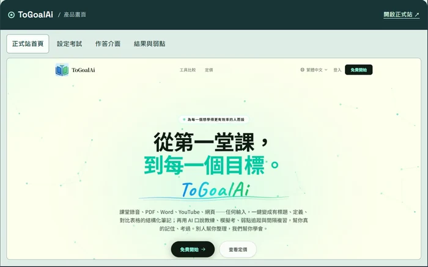
ToGoalAi 學習平台
我從零獨立設計介面、建立資料庫、串接模型 API 並部署上線。用戶可用自己的教材問答、練習及製作簡報。
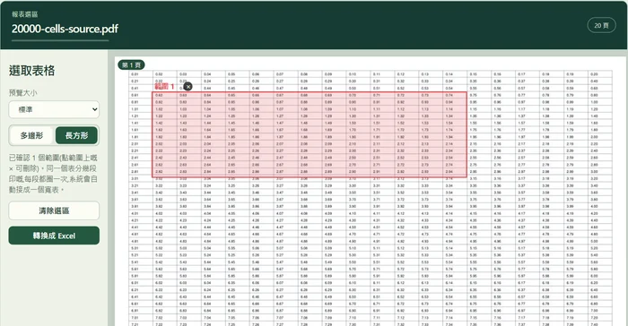
PDF 還原 Excel
將數萬格、由 Excel 輸出成 PDF 的工程報表還原為數值，讓工程師可以直接繼續計算。

3D 投標方案模型
投標團隊可用同一個模型查看平面、立體及剖面，向評審講解施工方案，協助公司爭取工程項目。
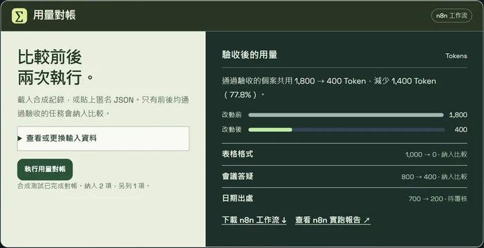
n8n 用量對帳
追蹤流程改動前後的 Token 用量。只有兩個版本都交出合格結果，才把該任務納入比較。

複雜 PDF 判讀 Skill
把多欄、細字和跨頁表格的判讀方法寫成 Skill，讓 AI 按來源整理資料，再交成可覆核的 Excel。

AutoCut 影片製作
把劇本、錄音對位、字幕、動畫、人聲處理及音效串成一套可重跑的短片製作流程。
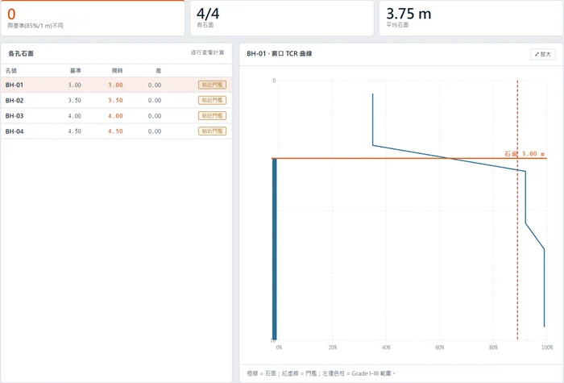
樁位審查工作台
把樁位資料、規則、AI 建議和工程師決定放進同一個工作台，讓每次覆核都有紀錄。
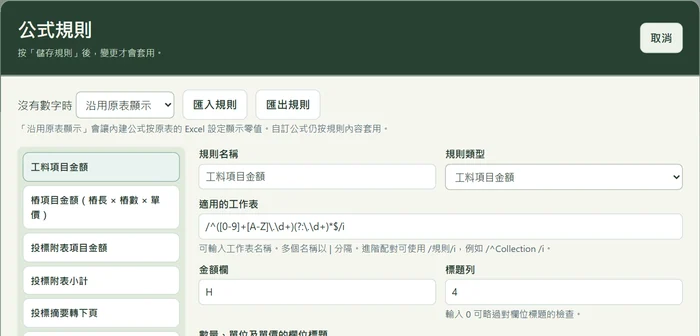
Excel 公式助手
按規則找出工作簿中需要更新的公式，讓同事先看修改差異，再另存副本。
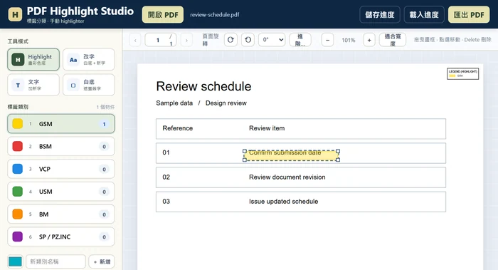
PDF 批註工具
在 PDF 上標出需要覆核的區域，配上圖例再匯出，讓接手的同事知道應查看哪個位置。
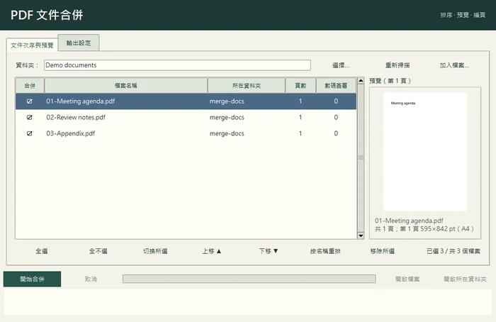
PDF 合併與編頁
將分散的 PDF 整理成一份可翻查的文件包，統一頁序、旋轉方向、頁碼與書籤。
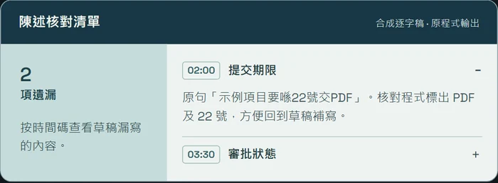
會議陳述核對 Skill
逐條對照錄音與草稿，找出會議有提及、但紀錄沒有收錄的決定。
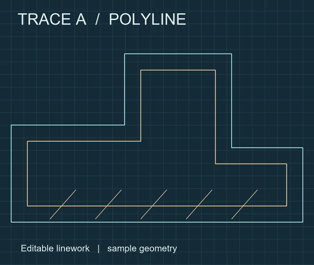
掃描圖轉 CAD
讓掃描或手繪詳圖重新成為可編輯的線條、物件和文字，方便同事在 CAD 繼續改圖。
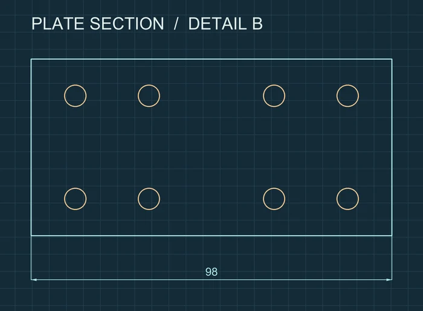
CAD 詳圖驗算 Skill
把詳圖格式、設計核對重點和盲測步驟寫進 Skill，讓每次出圖都有可比較的基準。
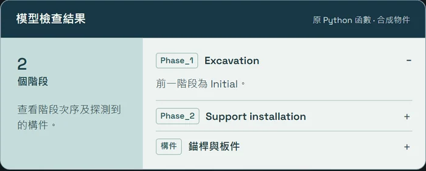
PLAXIS 模型檢查
讀取既有分析模型的階段、材料與構件，將狀態整理成工程師可核對的清單。

講座管理摘要
將長篇講座整理成給管理層看的 Word／PDF，重點、引圖和疑點都可以沿時間碼回到原片。
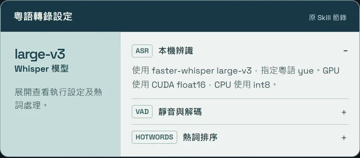
粵語影片轉錄 Skill
在本機將廣東話影片轉成帶時間點的逐字稿，供摘錄、核對及後續寫作重用。

程式化施工動畫
用 Python 驅動 Blender 場景、設備和鏡頭，把施工先後次序變成可重跑的解說動畫。
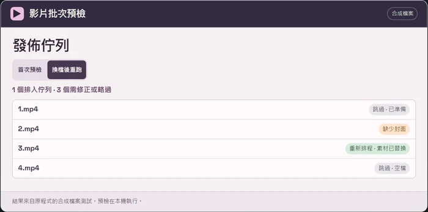
YouTube 上傳預檢
在上傳前配對影片、標題和封面。缺件先提示，換檔後重跑時跳過已準備的素材。
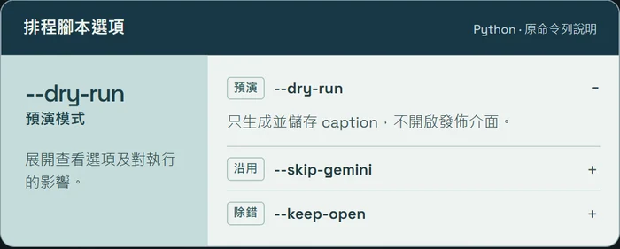
短片排程發佈
以 Python 和瀏覽器自動化串接短片發佈，將預演、排程和執行狀態整理成可重用工具。
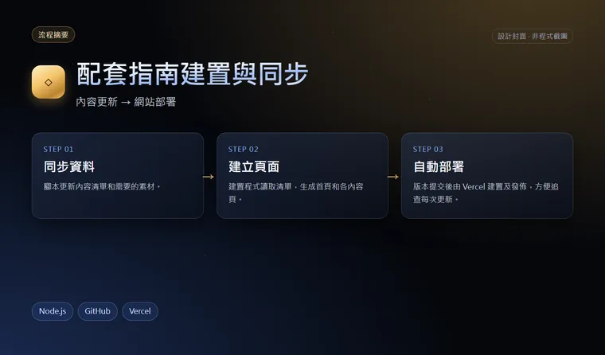
網站內容同步
把內容更新、資料同步和靜態網站建置接起來，讓新資料可沿同一條流程發佈。
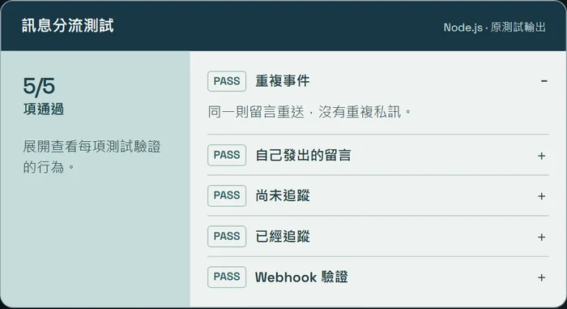
關鍵字訊息分流
將留言事件分流到相應回覆，依關鍵字和互動狀態決定下一步，減少逐次手動派發資料。
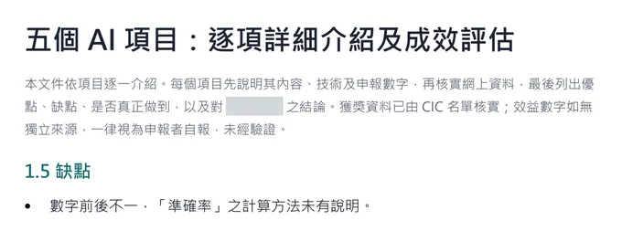
AI 工具評估報告
把五個 AI 方案的功能、證據及試用條件整理成報告，協助管理層決定值得先試哪一項。
互動求職作品集
以作品目錄、獨立個案頁和可操作的測試，讓招聘方由履歷直接檢查我的工程交付。
找不到符合這些條件的作品。
ABOUT GARY
關於我
鄧嘉維 · Tang Ka Wai, Gary
從工作現場開始設計
我先跟同事走一次原流程，找出重複工作、需要理解的內容，以及必須由人決定的地方。規則交給程式，語意交給模型，有疑點就連同來源交人覆核。
- 開發與維護
- 獨立開發及維護網站與手機 App。熟悉 Python、JavaScript、Three.js，日常使用 Claude Code 和 Codex。
- AI 與部署
- RAG、n8n、AI Skills、API 整合、Supabase、GitHub、Vercel。
- 工作經歷
- 2026.09 至今 · Kin Wing Engineering Co. Ltd
Assistant AI and design Administrator，設計部。 - 學歷與證書
- 國立政治大學公共行政學系，2026.06 畢業。經 HKCAAVQ 評估等同香港榮譽學士學位。持有 Claude 101、AI Fluency 證書。